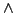
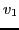
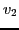
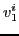
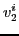
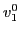
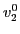
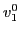
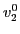

A sequential circuit differs from a combinational circuit in that output values depend not only on current input values but also on the history of change of those values. This may be modeled by a digraph such as the one in Figure 15 where each node represents a state of all output and intermediate values based on some input change history and each arc is labeled by input(s) whose changing value(s) cause(s) a transition from one state to another. Each transition is referred to below as a time step.
Let a circuit property be expressed as a propositional Boolean expression. An example of a property for a potential JK flip flop might be J  K Q meaning that it is possible to have an output Q value of T if both inputs J and K have value T.
The following time-dependent expressions are among those that typically need to be proved for a sequential circuit.
To construct a Boolean expression which must have value T if and only if the desired time-dependent expression holds, the Boolean expression must have components which:
In order for the Boolean expression to remain of reasonable size it is generally necessary to bound the number of time steps in which the time-dependent expression is to be verified; hence, bounded model checking.
For example, consider a simple 2-bit counter whose outputs are
represented by variables  (LSB) and  (MSB). Introduce
variables  and  whose values are intended to be the same
as those of variables and , respectively, on the  th time
step. Suppose the starting state is the case where both  and
 have value 0. The transition relation is
th time
step. Suppose the starting state is the case where both  and
 have value 0. The transition relation is
| Current Output | Next Output | |
| 00 | : | 01 |
| 01 | : | 10 |
| 10 | : | 11 |
| 11 | : | 00 |
which can be expressed as the following Boolean function:
Assemble the propositional formula having value T if and only if the above query holds as the conjunction of the following three parts:
The reader may check that the following satisfy the above expressions: